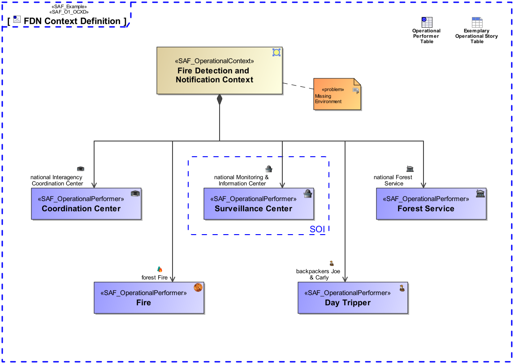

O1_OCXD Operational Context Definition Viewpoint
| Domain | Aspect | Maturity |
|---|---|---|
| Operational | Context & Exchange |

The Operational Context Definition Viewpoint provides the operational contexts and the involved operational performers necessary to support a specific set of operational capabilities.
The Operational Context Definition Viewpoint supports the “Business or Mission Analysis Process” activities of the INCOSE SYSTEMS ENGINEERING HANDBOOK 2023 [§2.3.5.1] and contributes to both the problem or opportunity statement, and the Major Stakeholder Identification.
A block definition diagram (BDD) featuring the identified Operational Performers playing a role in the Operational Context being addressed.
The following Stereotypes / Model Elements are used in the Viewpoint:
The Diagram shows the concepts exposed by the viewpoint, and related concepts if necessary.
| Concept | Documentation |
|---|---|
| Operational Context Role | An Operational Context Role represents a participant in an Operational context. It is interacting with other roles of the given Operational Context. Specific characteristics and features or, in case of persons or organizational units, knowledge and skills are assigned to a role necessary for the execution of the performed Operational Processes. |
| Operational Context | An Operational Context is representing a separate Usage Scenario with a specific configuration of Operational Performers, these are interacting in the Scenario exhibiting a specific identified Operational Capability. One or more Operational Contexts meaningful for the Operational Domain are to be identified. Aliases: UAF::HighLevelOperationalConcept |
| Operational Performer | An Operational Performer is an element of the Operational Context that is capable to perform Operational Process Activities contributing to a specific identified Operational Capability. An Operational Performer may be any kind of organization, person, or even a system playing a role in one or more Operational Contexts. Aliases: UAF::OperationalPerformer |
The Diagram shows the implementation of exposed concepts.
| Concept | Realization |
|---|---|
| Operational Context Role | SAF_OperationalContextRole |
| Operational Context | SAF_OperationalContext |
| Operational Performer | SAF_OperationalPerformer |